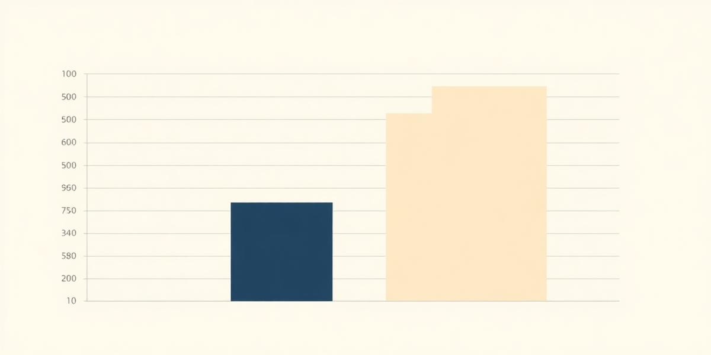

Q3 Expenditure Narrative
An analytical overview of the fiscal variances observed within the Northern Regional Operations for the third quarter of the 2023 fiscal year.
Our recent query of the Oracle SQL Environment reveals a significant divergence in operational costs. Specifically, the Northern sector experienced a surge in utility and labor expenses that were not accounted for in the initial budgetary projections.

Moving forward, the recommendation is to integrate these findings into the master Excel sheet for consolidated reporting. The AI has flagged three areas where cost-saving measures could be applied based on historical trends saved in the conversation logs.